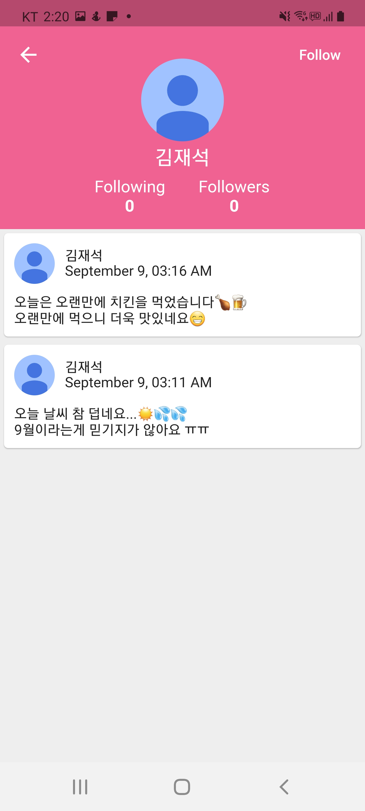

3.4. 프로필

타임라인에서 우측 상단의 사용자 아이콘을 터치하면 자신의 프로필 페이지로 이동하고,
스윗의 프로필 사진을 터치하면 스윗 작성자의 프로필 페이지로 이동합니다.
프로필 페이지에서는 사용자의 프로필 사진, 팔로잉 / 팔로워 수, 스윗을 확인할 수 있습니다.
자신의 프로필 페이지에서 프로필 사진을 터치하면 프로필 사진을 변경할 수 있습니다.
다른 사용자의 프로필 페이지에서 우측 상단의 팔로우 버튼을 터치하면 해당 사용자를 팔로우 할 수 있습니다.
팔로잉 / 팔로워 수를 터치하면 팔로잉 / 팔로워 목록을 확인할 수 있습니다.